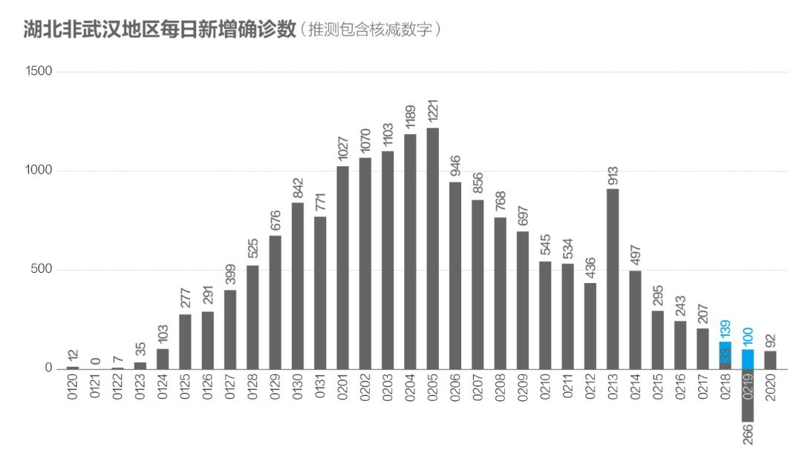
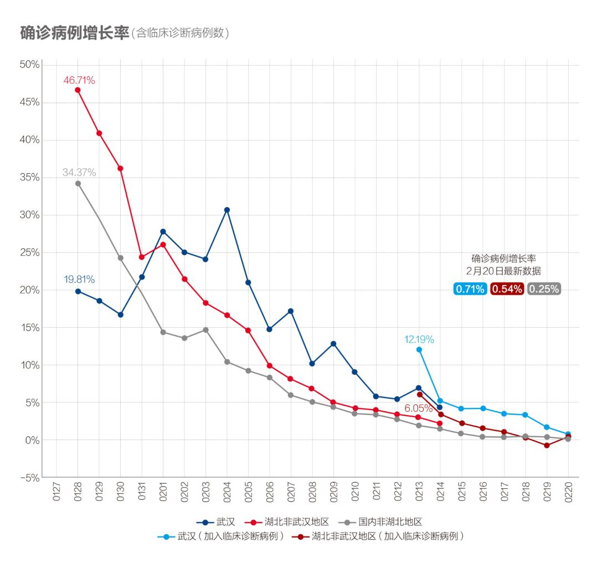
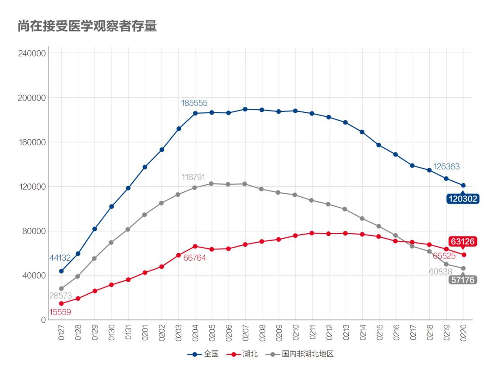
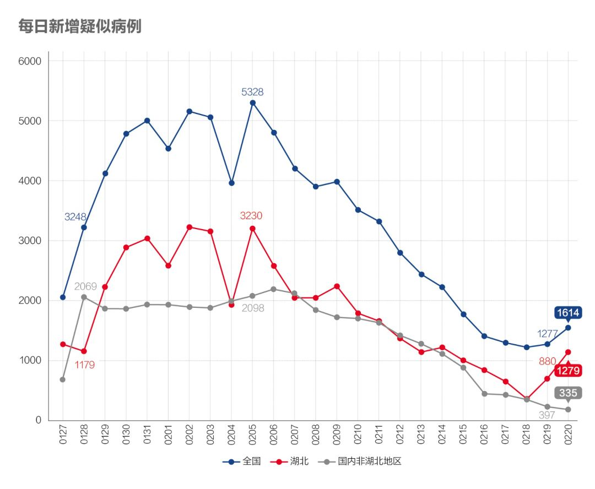
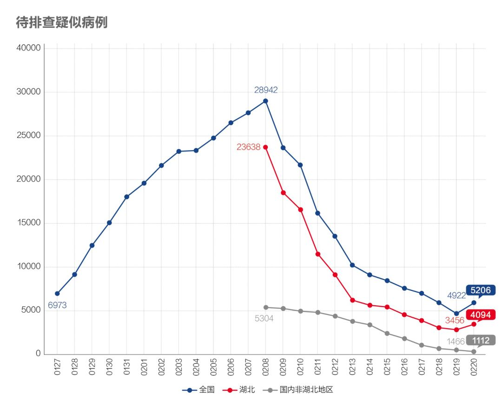
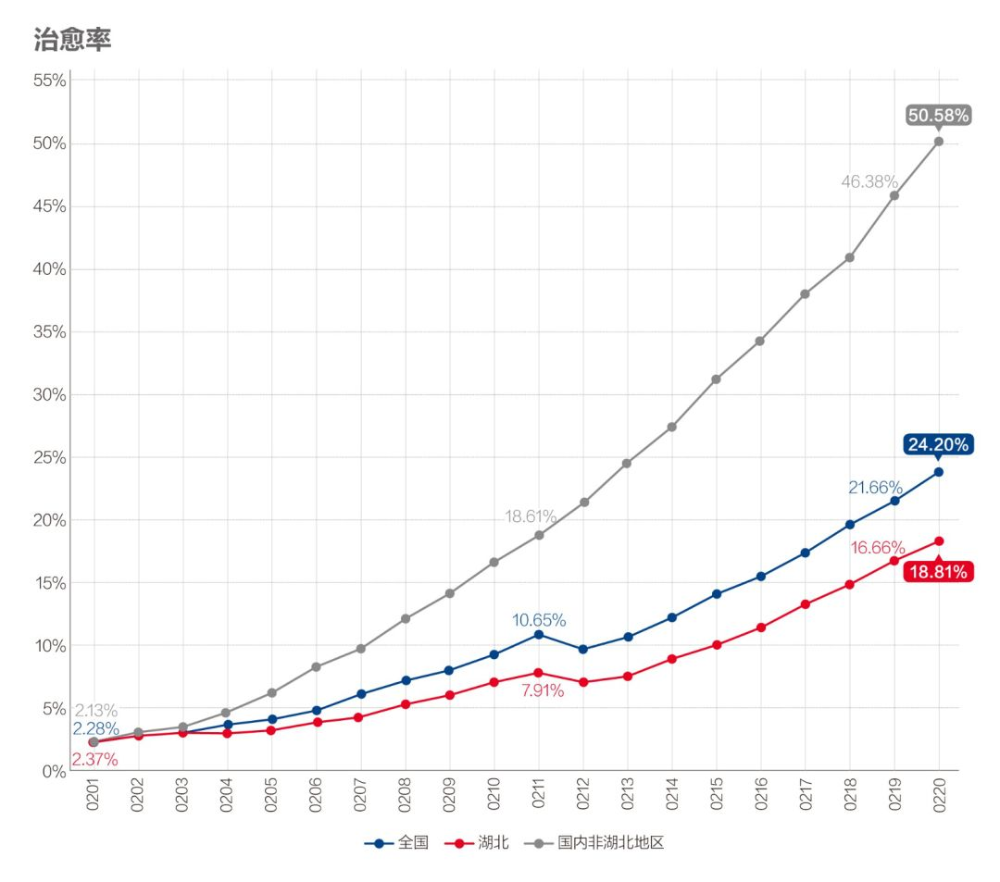
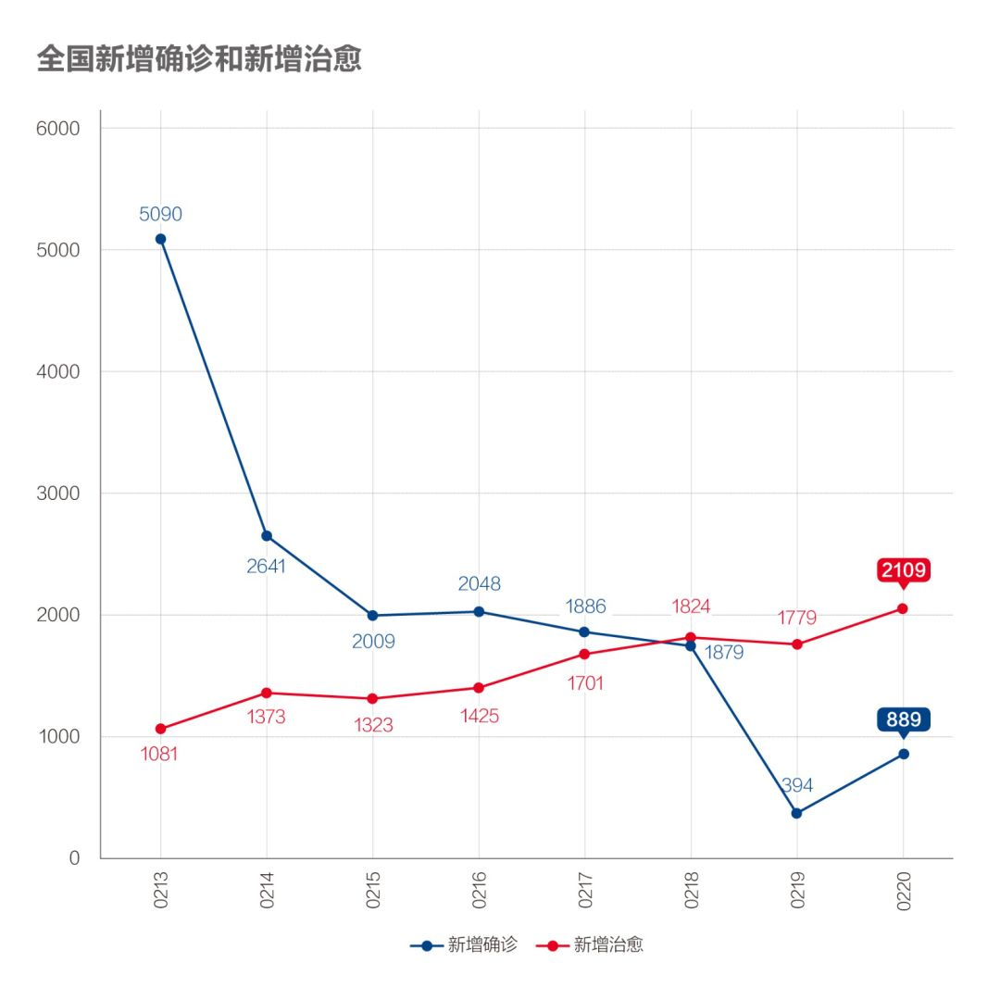
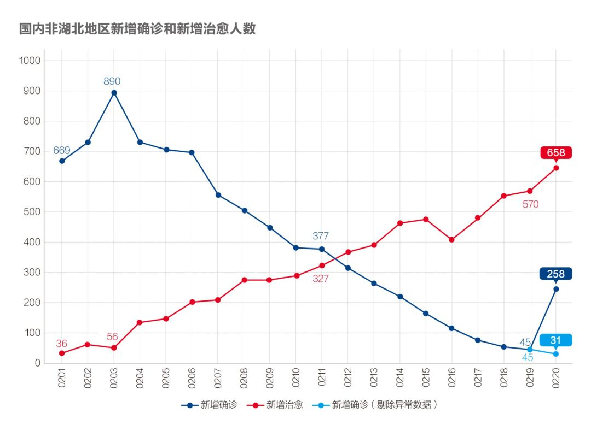

数说疫情0219：非湖北地区新增病例趋零，湖北趋缓但武汉尚待扭转
原文链接 备份链接 全国武汉以外地区全面向好，期待武汉落实五个“百分之百”终获成功！ 文 |《财经》数据研究员 徐进 图 |《财经》视觉中心 编辑 | 谢丽容 一、 累计确诊病例 截至2月18日24:00，全国累计报告确诊新冠肺炎病 …

_
武汉新增确诊病例和新增治愈病例今日跨过“黄金交叉”点，从此全国包括武汉在内将逐日加大释放以医院病床床位为核心的医疗资源。但也应注意到2月20日数据出现两个异常：一是非湖北地区新增病例出现巨大反弹；二是国家卫健委与湖北卫健委发布的“湖北累计确诊病例”相差220例
_

文 |《财经》数据研究员 徐进
图 |《财经》视觉中心
编辑 | 谢丽容
一、 累计确诊病例
截至2月20日24:00，全国累计报告确诊新冠肺炎病例74576例。以下为分区趋势图。

图1
国内非湖北地区趋势线已现平顶，累计病例不会超过12700例。
二、 新增病例：武汉继续陡降，武汉以外维持向好走势

图2
2月20日数据出现两个异常。一是非湖北地区新增病例出现巨大反弹；二是国家卫健委与湖北卫健委发布的“湖北累计确诊病例”相差220例。
第一个异常考虑到山东、浙江两地监狱数字发布同时已对有关领导（包括山东司法厅长）作出处分，可见应该是病情发在前，数据发布在后，故其中227例应从当日新增中剔除。剔除后当日非湖北地区当日新增病例31例，趋势未改变，与各省数据基本吻合。
第二个异常是央地数据矛盾，仍期待官方权威解释或进一步的数据调整。暂不做推测（发稿时湖北卫健委更正追加220例监狱案例，我们暂按“统计口径调整”处理）。

图3
2月20日湖北非武汉地区确诊病例批量核减完成，新增病例从异常下降回归正常降幅，正式降至两位数水平。符合我们此前推测。

图4
武汉新增病例再次大幅下降至319例，可认作是武汉“五个百分百”战役胜利完成的结果。确认武汉五个“百分之百”战役完成。结合后面数据可知，武汉战局已全面扭转。
三、 确诊病例增长率：武汉终于降到1%以下

图5
国内非湖北地区增长率降至0.25%，湖北非武汉地区降至0.54%。武汉增速陡降至1%以下。
四、 密切接触者追踪：近期数据显示湖北的追踪力度明显上升，值得期待

图6
国内非湖北地区终于停下来等一等了。湖北这个指标连日持续爬升追赶，如果单看近三天增量，追踪比已达到10以上。
消息指湖北省委书记和武汉市委书记近日都提到流行病学调查（追踪溯源）的重要性。此数据可以支撑。

图7
湖北尚在接受医学观察者存量数据继续下降，显示疫情趋缓。国内非湖北地区继续明显下降，意味着可以释放更多资源投入到新的密切接触者追踪上（如果还有需要的话）。
五、 疑似病例：新增减少、存量下降

图8
湖北（含武汉）新增疑似病例较昨日回升近400例，应属武汉“五个百分百”成果。

图9
疑似病例存量湖北回升似应体现武汉百分之百收治隔离疑似病例。
六、 在院治疗人数：非湖北地区继续下降

图10
湖北此数据变化估计有统计口径调整因素。
七、 病死率有回升，但治愈率以更快速度增长

图11
病死率继续回升，这里有病死发生时间与新确诊增加不同步的因素，也有救治能力和医疗资源因素。武汉病死率仍明显高于湖北和全国，是此前收治不及时所致。

图12
治愈率以更快速度上升。

图13.1新出院人数与新确诊人数

图13.2

图13.3

图13.4
武汉一举跨过“黄金交叉”点，全局发生逆转。这将是2月20日的标志性事件。从此，全国包括武汉在内将逐日加大释放以医院病床床位为核心的医疗资源。战局由防守转为全面进攻。值得庆贺！
小结：武汉在“五个百分之百”决战功成后，迈出了跨越“黄金交叉点”这决定性一步。标志武汉疫情和湖北、全国其他地区一样，终于走进全面反攻阶段。湖北以外地区复工复产速度有望加快。
● 数说疫情
数说疫情0220：非湖北地区新增病例趋零，现阶段应大胆加快返工复产
数说疫情0216：湖北化解堰塞湖战局扭转，非湖北地区新增病例5日内清零
数说疫情0215：非湖北地区新增病例5日后有望清零，湖北进入总攻阶段

▲点击图片查看更多疫情报道
责编 | 蒋丽 lijiang@caijing.com.cn
本文为《财经》杂志原创文章，未经授权不得转载或建立镜像。如需转载，请在文末留言申请并获取授权。
原文链接 备份链接 全国武汉以外地区全面向好，期待武汉落实五个“百分之百”终获成功！ 文 |《财经》数据研究员 徐进 图 |《财经》视觉中心 编辑 | 谢丽容 一、 累计确诊病例 截至2月18日24:00，全国累计报告确诊新冠肺炎病 …
原文链接 备份链接 今天起我们将不再提“归零”，以期警钟长鸣 2020年1月17日，医护人员将患者送至武汉金银潭医院。摄影/无畏 文 |《财经》数据研究员 徐进 图 |《财经》视觉中心 编辑 | 谢丽容 一、 …
原文链接 备份链接 我们为什么预测本月20日前每日新增病例归零？五个依据 2020年2月6日，武汉市蔡甸区人民医院的隔离病房。摄影/陈卓 文 |《财经》数据研究员 徐进 图 |《财经》视觉中心 编辑 | 谢丽容 截至2月16 …
原文链接 备份链接 文 | 《财经》数据研究员 徐进 图 |《财经》视觉中心 编辑 | 谢丽容 1. 全国累计确诊病例趋势 截至2月15日24:00，全国累计报告确诊新冠肺炎病例68500人。以下分地区情况。 图1 有朋友提醒小编：你不 …
原文链接 备份链接 文 |《财经》数据研究员 徐进 图 |《财经》视觉中心 编辑 | 谢丽容 1. 全国累计新增确诊病例 图1 由图可见，国内非湖北地区正趋于平缓。 2. 新增病例：国内非湖北地区继续坚定下降，有望近日归零 图2 国内 …